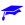

<!doctype html>
<html lang="en">
    <head>
        <meta charset="utf-8">
        <meta http-equiv="X-UA-Compatible" content="IE=edge">
        <meta name="viewport" content="initial-scale=1,user-scalable=no,maximum-scale=1,width=device-width">
        <meta name="mobile-web-app-capable" content="yes">
        <meta name="apple-mobile-web-app-capable" content="yes">
        <link rel="stylesheet" href="css/leaflet.css">
        <link rel="stylesheet" href="css/qgis2web.css">
        <style>
        html, body, #map {
            width: 100%;
            height: 100%;
            padding: 0;
            margin: 0;
        }
        </style>
        <title></title>
    </head>
    <body>
        <div id="map">
        </div>
        <script src="js/qgis2web_expressions.js"></script>
        <script src="js/leaflet.js"></script>
        <script src="js/leaflet.rotatedMarker.js"></script>
        <script src="js/leaflet.pattern.js"></script>
        <script src="js/leaflet-hash.js"></script>
        <script src="js/Autolinker.min.js"></script>
        <script src="js/rbush.min.js"></script>
        <script src="js/labelgun.min.js"></script>
        <script src="js/labels.js"></script>
        <script src="data/Networks22022018_0.js"></script>
        <script>
        var map = L.map('map', {
            zoomControl:true, maxZoom:28, minZoom:1
        }).fitBounds([[28.5114552559,-32.7496690161],[60.3153091843,59.2227439282]]);
        var hash = new L.Hash(map);
        map.attributionControl.addAttribution('<a href="https://github.com/tomchadwin/qgis2web" target="_blank">qgis2web</a>');
        var bounds_group = new L.featureGroup([]);
        var basemap0 = L.tileLayer('http://{s}.tile.openstreetmap.org/{z}/{x}/{y}.png', {
            attribution: '&copy; <a href="http://openstreetmap.org">OpenStreetMap</a> contributors,<a href="http://creativecommons.org/licenses/by-sa/2.0/">CC-BY-SA</a>',
            maxZoom: 28
        });
        basemap0.addTo(map);
        function setBounds() {
        }
        function pop_Networks22022018_0(feature, layer) {
            var popupContent = '<table>\
                    <tr>\
                        <td colspan="2">' + (feature.properties['Network'] !== null ? Autolinker.link(String(feature.properties['Network'])) : '') + '</td>\
                    </tr>\
                    <tr>\
                        <td colspan="2">' + (feature.properties['Member'] !== null ? Autolinker.link(String(feature.properties['Member'])) : '') + '</td>\
                    </tr>\
                    <tr>\
                        <td colspan="2">' + (feature.properties['POC'] !== null ? Autolinker.link(String(feature.properties['POC'])) : '') + '</td>\
                    </tr>\
                    <tr>\
                        <td colspan="2">' + (feature.properties['Email'] !== null ? Autolinker.link(String(feature.properties['Email'])) : '') + '</td>\
                    </tr>\
                </table>';
            layer.bindPopup(popupContent, {maxHeight: 400});
        }

        function style_Networks22022018_0_0(feature) {
            switch(feature.properties['Network'].toString()) {
                case 'Academy':
                    return {
                pane: 'pane_Networks22022018_0',
        rotationAngle: 0.0,
        rotationOrigin: 'center center',
        icon: L.icon({
            iconUrl: 'markers/education_university.svg',
            iconSize: [19.0, 19.0]
        }),
            }
                    break;
                case 'Relays':
                    return {
                pane: 'pane_Networks22022018_0',
        rotationAngle: 0.0,
        rotationOrigin: 'center center',
        icon: L.icon({
            iconUrl: 'markers/amenity_information.svg',
            iconSize: [19.0, 19.0]
        }),
            }
                    break;
            }
        }
        map.createPane('pane_Networks22022018_0');
        map.getPane('pane_Networks22022018_0').style.zIndex = 400;
        map.getPane('pane_Networks22022018_0').style['mix-blend-mode'] = 'normal';
        var layer_Networks22022018_0 = new L.geoJson(json_Networks22022018_0, {
            attribution: '<a href=""></a>',
            pane: 'pane_Networks22022018_0',
            onEachFeature: pop_Networks22022018_0,
            pointToLayer: function (feature, latlng) {
                var context = {
                    feature: feature,
                    variables: {}
                };
                return L.marker(latlng, style_Networks22022018_0_0(feature));
            },
        });
        bounds_group.addLayer(layer_Networks22022018_0);
        map.addLayer(layer_Networks22022018_0);
        var baseMaps = {};
        L.control.layers(baseMaps,{'Networks_22022018<br /><table><tr><td style="text-align: center;"></td><td>Academy</td></tr><tr><td style="text-align: center;"></td><td>Relays</td></tr></table>': layer_Networks22022018_0,},{collapsed:false}).addTo(map);
        setBounds();
        </script>
    </body>
</html>
